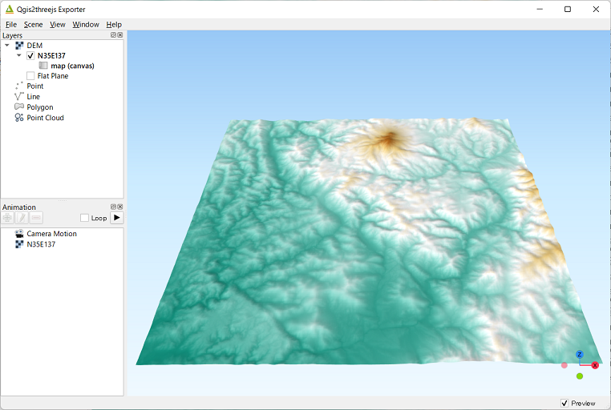
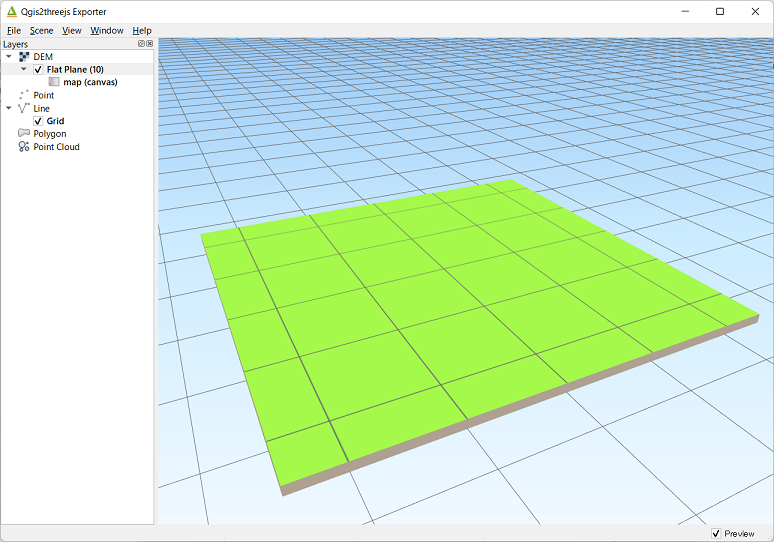
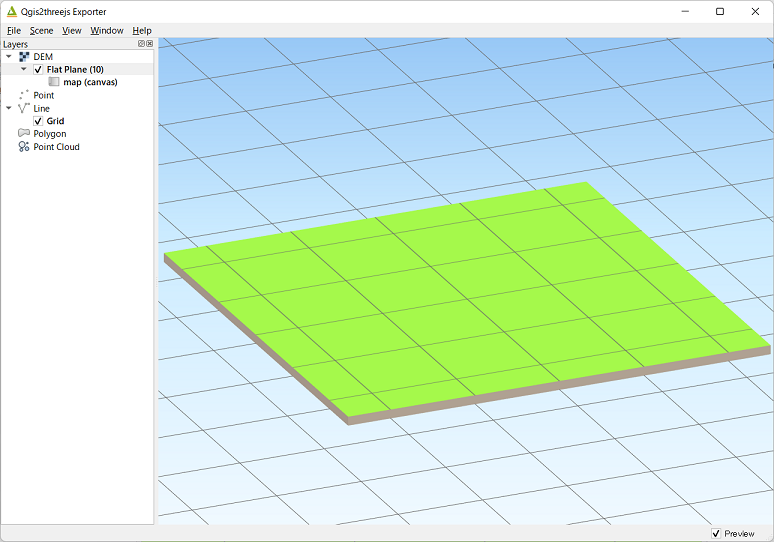
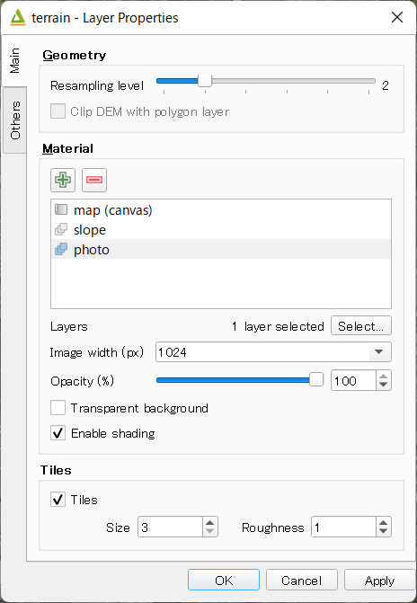
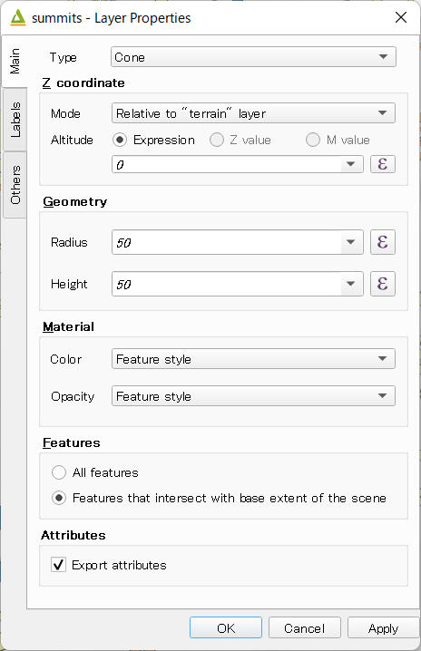
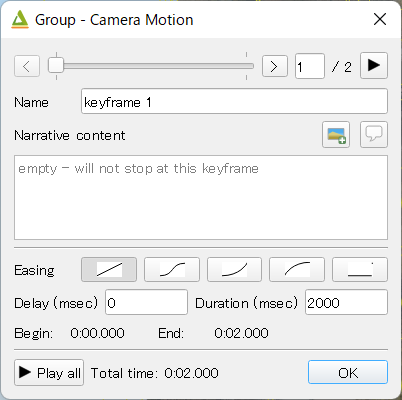
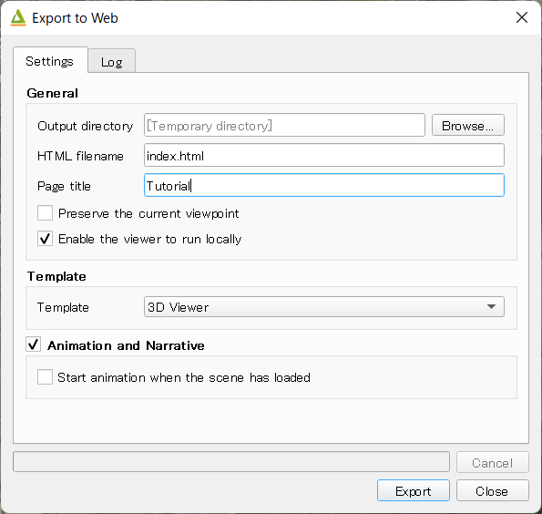
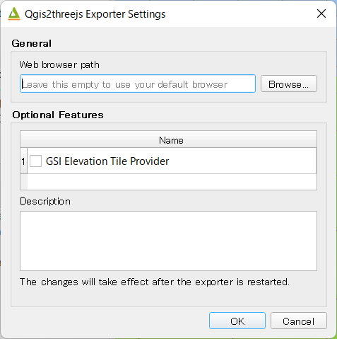

Exporter¶
Window¶
Qgis2threejs exporter window has Layers panel and Animation panel on the left side, and preview on the right side.
In this plugin, the word “export settings” means all configuration settings for a 3D scene and its viewer application, which consist of settings for scene, camera, every layer to export, animation, widgets on web page and so on. You can configure them via Scene menu, Layers panel, Animation panel, View menu and Export to Web dialog.
In the Layers panel, each layer item has a checkbox on its left. Check the checkbox to add the layer to current scene. To open layer properties dialog and configure settings for the layer, double-click on the layer item or click on Properties… from context menu (right click menu).
Export settings are automatically saved to a .qto3settings file alongside the current QGIS project file if you are working
with a QGIS project file. When you open the exporter later, the export settings of the project will be restored.
If you don’t want to use preview, uncheck Preview checkbox in the lower right corner of the window. You might want to uncheck it to avoid waiting for updating 3D objects in the scene for each export settings update.
Scene Settings¶
Scene settings dialog controls some basic configuration settings for current scene.
Click on Scene - Scene Settings... menu entry to open the dialog.
{kind=link}
World Coordinates
Origin of xy-plane
Center of base extentOrigin of map coordinate systemZ exaggeration
Vertical exaggeration factor. This value affects terrain shape and z positions of all vector 3D objects. This also affects 3D object height of some object types with volume. Shape types to be affected:
Point : Cylinder, Cube, ConePolygon : ExtrudedThe following shape types have volume, but their heights aren’t affected by this factor:
Point : SphereLine : Pipe, Cone, BoxThe default value is 1.0.
Base Extent
Use map canvas extent
Fixed extent
Fix aspect ratio to 1:1 Checked by default since version 2.7.
Background
Select either sky-like gradient or a solid color for the scene background. Default is Sky.
Display of coordinates
If the
Latitude and longitude (WGS84)option is selected, coordinates of clicked position on a 3D object are displayed in longitude and latitude (WGS84). If Proj4js doesn’t support current map CRS, this option is disabled.
{kind=link}
Light
Directional light from the lower left of the 2D mapPoint light above the cameraFog Color and density.
Material & Effect
Basic material type
Material type applied to most 3D objects, except for Point, Billboard, Model File and Line type objects. Select a material type from Lambert material, Phong material and Toon material. Default is Lambert material.
Enable outline effect
Camera Settings¶
Perspective Camera
Renders closer objects as bigger and farther objects as smaller.
Orthographic Camera
Rendered object size doesn’t depend on the distance from the camera.
Perspective camera |
Orthographic camera |
 |
 |
Controls Settings¶
OrbitControls is available.
Ctrl |
Mouse / Keys |
Touch |
|---|---|---|
Orbit |
Left mouse |
One-finger move |
Zoom |
Middle mouse, or mousewheel |
Two-finger spread or squish |
Pan |
Right mouse, or left mouse + ctrl/metaKey, or arrow keys |
Two-finger move |
Widgets¶
Navigation widget
✏
North arrow
Adds an arrow that indicates the direction of grid North at the lower-left corner of the web page.
Header/Footer label
Adds a header label to top-left corner of the web page and/or a footer label to lower-left corner. Label text can contain valid HTML tags for styling.
DEM Layer Settings¶
{kind=link}
Geometry¶
Resampling level
Select a DEM resolution from several levels. This resolution is used to resample the DEM, but is not for texture.
Clip DEM with polygon layer
Clips the DEM with a polygon layer. If you have a polygon layer that represents the area that elevation data exist or represents drainage basins, you might want to use this option.
Material¶
✏
The material list has one item map (canvas) by default.
You can add a material to the list by clicking + button, selecting one of Select layer(s), Image file,
Solid color and Map canvas layers.
Map canvas layers
Render a texture image with the current map settings for each DEM block.
Layer image(s)
Render a texture image with the selected layer(s) for each DEM block.
Image file
Textures the main DEM block with existing image file such as PNG file and JPEG file. TIFF is not supported by some browser. See Image format support for details.
Solid color
To select a color, press the button on the right side.
Image width (px)
Select width of image draped on each DEM block. Default value is 1024.
Opaciy
Sets opacity of DEM object. 100 is opaque, and 0 is transparent.
Transparent background
When map canvas image or layer image is chosen
Makes image background transparent.
Enable shading
Adds a shading effect to DEM surface. Checked by default.
Tiles¶
✏
Tiles
This option enlarges output DEM by placing DEM blocks around the main block of the map canvas extent. Size can be selected from odd numbers in the range of 3 to 9. If you select 3, total 9 (=3x3) blocks (a center block and 8 surrounding blocks) are output. Roughness can be selected from powers of 2 in the range of 1 to 64. If you select 2, grid point spacing of each surrounding block is doubled. It means that the number of grid points in the same area becomes 1/4.
{kind=link}
Other Options¶
Build sides
This option adds sides and bottom to each DEM block. The z position of bottom in the 3D world is fixed. You can adjust the height of sides by changing the value of vertical shift option in the World panel. If you want to change color, edit the output JS file directly.
Add edge lines
This option adds frame to the DEM. If you want to change color, edit the output JS file directly.
Add quad wireframe
Name
Visible on Load
Whether the layer is visible on page load or not.
Clickable
Vector Layer Settings¶
{kind=link}
Vector layers are grouped into three types: Point, Line and Polygon. Common settings for all types:
Type
Select a shape type.
Z coordinate
Altitude Mode
Absolute
Altitude is distance above zero-level.
Relative to (a DEM layer)
Altitude is distance above surface of selected DEM.
Altitude
You can use an expression to define altitude of objects above zero-level or surface of selected DEM layer. This means that object altitude can be defined using field values. The unit is that of the map CRS.
Expression
A numeric value, field or more complex expression (QGIS expressions).
Z value / M value
Uses z coordinate or m value of each vertex. the evaluated value is added to it.
These options can be chosen when the layer geometries have z coordinates or m values. Cannot be chosen when the object type is Extruded or Overlay.
Geometry and Material
Usually, there are options to set object color and transparency. Refer to the links below for each object type specific settings. The unit of value for object size is that of the map CRS.
Feature
Select the features to be exported.
All features
All features of the layer are exported.
Features that intersect with map canvas extent
Features on the map canvas are exported.
Clip geometries
This option is available with Line/Polygon layer. If checked, geometries are clipped by the extent of map canvas.
Attributes
If the export attributes option is checked, attributes are exported with feature geometries. Attributes are displayed when you click an object on web browser.
{kind=link}
Labels
This combo box is not available when layer type is line.
Show labels a label is displayed above each object.
Position
Text
Fill background
Connector
{kind=link}
Others
Name
Visible on Load
Whether the layer is visible on page load or not.
Clickable
Point¶
Point layers in the project are listed as the child items. The following shape types are available:
Sphere, Cylinder, Cone, Box, Disk, Plane, Model File
See Point Layer section in Object Types page for each object type specific settings.
Line¶
Line layers in the project are listed as the child items. The following shape types are available:
Line, Pipe, Cone, Box, Wall
See Line Layer section in Object Types page for each object type specific settings.
Polygon¶
Polygon layers in the project are listed as the child items. The following shape types are available:
Polygon, Extruded, Overlay
See Polygon Layer section in Object Types page for each object type specific settings.
Point Cloud Layer Settings¶
✏
Information
Material
Color type
Opacity
Other options * Name * Show bounding boxes * Visible on load * Clickable
Animation¶
Animation panel¶
✏
Camera Motion
Group and keyframe item.
Layer
Texture change
Growing line
Change opacity
Tween
{kind=link}
Keyframe dialog¶
{kind=link}
✏
Export to Web Dialog¶
{kind=link}
Output directory and HTML Filename
Select output HTML file path. Usually, a js file with the same file title that contains whole data of geometries and images is output into the same directory, and some JavaScript library files are copied into the directory. Leave this empty to output into temporary directory. Temporary files are removed when you close the QGIS application.
Page title
✏
Preserve the Current Viewpoint
If checked, the current viewpoint of the preview is used as initial viewpoint.
Enable the Viewer to Run Locally
If checked, export all scene data to a .js file to avoid web browser’s same origin policy security restrictions. You can view the exported scene without uploading it to a web server, although the total file size will increase and it will take longer to load.
Template
Select a template from available templates:
3DViewer
This template is a 3D viewer without any additional UI library.
3DViewer(dat-gui)
This template has a dat-gui panel, which makes it possible to toggle layer visibility, adjust layer opacity and add a horizontal plane movable in the vertical direction.
Mobile
This is a template for mobile devices, which has mobile friendly GUI, device orientation controls and AR feature. In order to use the AR feature (Camera and GPS), you need to upload exported files to a web server that supports SSL.
- Magnetic North Direction
Magnetic North direction clockwise from the upper direction of the map, in degrees. This value will be set to 0 if map canvas is rotated so that magnetic North direction is same as the map upper direction. Otherwise, the value should be determined taking account of grid magnetic angle (angle between grid North and magnetic North) and map rotation. Used to determine device camera direction.
Animation and Narrative
✏
Start animation once the scene has been loaded
Export button
Exporting starts when you press the Export button. When the exporting has been done and Open exported page in web browser option is checked, the exported page is opened in default web browser (or a web browser specified in Exporter Settings).
Exporter Settings¶
{kind=link}
Web browser path
If you want to run the exported viewer with a web browser other than the default browser, enter path to the web browser in this input box. See Browser Support wiki page.
Optional Features
See Plugins wiki page.